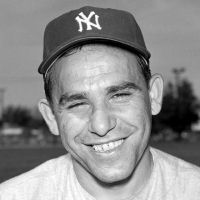

Lawrence Peter Berra (1925 - 2015), más conocido como Yogi Berra, fue un gran jugador y entrenador de béisbol estadounidense. Fue muy popular por su caracter extrovertido , pero tambien por sus declaraciones publicas , a menudo salpicadas de equivocaciones y sisentidos. Sus dichos mas celebres se conocen como yogismos y combinar el humor involuntarion con cierta sabiduria paradojica.
Acude siempre al funeral de los demás, porque si no, no irán al tuyo.
Me gustaría tener una respuesta porque estoy harto de contestar esa pregunta.
Si no sabes adónde vas, acabarás en cualquier otro sitio.
La mitad de las mentiras que cuentan de mí no son ciertas.
Cuando llegues a una bifurcación en tu camino, simplemente tómala.
La cosa no ha terminado hasta que no ha terminado.
A ese sitio ya no va nadie porque siempre hay demasiada gente.
Puedes observar muchas cosas simplemente mirando.
Nunca he dicho la mayoría de las cosas que he dicho.